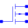

Transconductance |
Type Information
| Real |
Quantity: Transconductance Unit: A/V2 |
|---|
Used in Components (7)
|
Modelica.Electrical.Analog.Semiconductors Simple NMOS transistor with heating port |
|
|  |
Modelica.Electrical.Analog.Semiconductors Simple PMOS transistor with heating port |
|
Modelica.Electrical.Spice3.Internal Record with technology parameters (.model) |
|
|
Modelica.Electrical.Spice3.Internal.Mosfet Mosfet Variables |
|
|
Modelica.Electrical.Spice3.Internal.Mos Record for Mosfet model line parameters (for level 1, 2, 3 and 6) |
|
|
Modelica.Electrical.Spice3.Internal.Mos Record for Mosfet model line variables (for level 1) |
|
|
Modelica.Electrical.Spice3.Internal.Mos Further MOSFET variables (for level 1, 2, 3 and 6) |